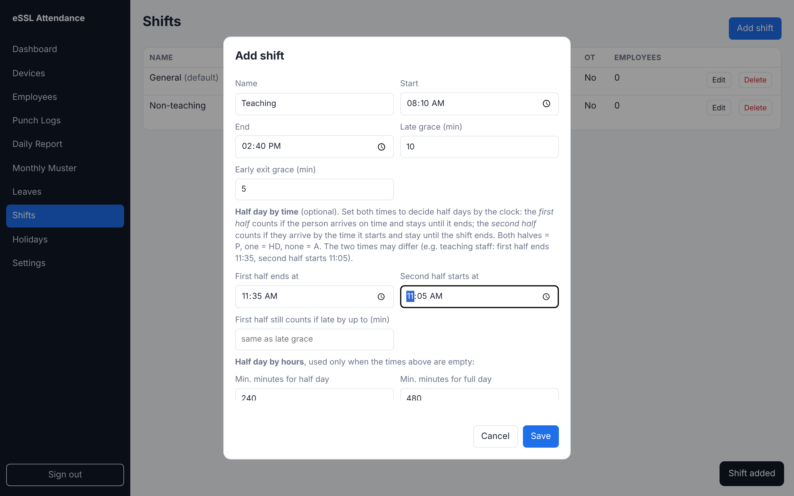
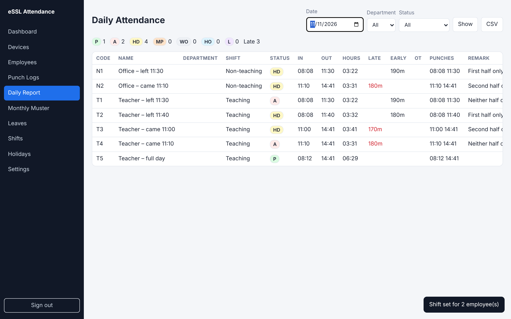

A shift can decide half days by the clock instead of by hours worked. Set First half ends at and Second half starts at on the shift (Shifts → Edit). The two times may differ, so one school day can have different half-day rules for different staff.
| Half | Counts when the person… |
|---|---|
| First half | arrives on time (within the late allowance) and leaves at or after First half ends at |
| Second half | arrives at or before Second half starts at and stays until the shift ends (within early-exit grace) |
| Result | both halves P · one half HD (remark "First half only" / "Second half only") · neither A |


1. Shifts → Add shift twice: "Non-teaching" (11:25 / 11:25) and "Teaching" (11:35 / 11:05), both 08:10–14:40. 2. Employees: tick all teachers, click Set shift, choose "Teaching"; then tick the office staff and choose "Non-teaching". The ticks clear after each apply.